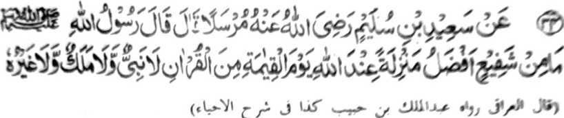

Miyakathitayan ko Sa’id bin Sulaim (Radhiallaho ‘Anho) Mursalan a pitharo iyan a pitharo o Rasulollah (Sallallaho ‘Alaihi wa Sallam), “Da a maporo-i daradat a phanapa-at sa hadapan o Allah ko Gawi-i a Kaphangokom a ba niyan kalawani so Qur’an, apiya antawa-a Nabi ago apiya antawa-a Mala-ikat, go apiya antawa-a salakao ro-o.”
Kiyatokawan ko madakel a Hadith a so Qur’an na phanapa-at - phanapa-at a so sapa-at iyan na tharima-an. Phangenin tano ko Allah a pakisapa-at tano Niyan ko Qur’an langon, ago di Niyan balowin a mizopaka o di na manontot reketano.
Si-i ko [kitab a] La’ali Masnu’ah, na miya-aloy ron a pho-on sa tothol o Bazzar, a kena ba malobay a katharo:
‘Kagiya matay a sakatao a mama a so manga lolot iyan na gi-i ran ndiyatoren a kipelebengen non, na aden a tanto a mata-id a mangoda a tomitindeg ko obay o olo o mama. So kiyakapana sangkoto a mama, na somiyolek so mangoda ko pageletan o onong ago so rareb angkoto a miyatay.
So kiyabaling o manga tao ko oriyan o kiyapaka-kobor iran, na so dowa Mala-ikat, a Munkar ago Nakir, na miyaka-oma siran sangkoto a Qobor na biya-as iran a mabelag angkoto a mangoda sangkoto a miyatay ka-an niran misibay ko kapagiza-i ran non pantag ko paratiyaya niyan. Ogaid na aya pitharo kiran angkoto a mangoda na, “Bolayoka aken sekaniyan, ginawa-i aken sekaniyan, di aken sekaniyan mbelagen apiya antona-ai miyasowa. O ba kano sosogo-a sa kaphangingiza iyo na nggola-ola a niyo, ka di aken sekaniyan mbelagen taman sa di ko sekaniyan misoled ko Sorga.”
Oriyan niyan na diningilan niyan so miyatay a bolayoka iyan na tharo-on niyan, “Saken so Qur’an, a lalayon ka pembatiya-an sa maka-isa na matanog a lago ago maka-isa peman na si-i ko masolen. Di ka pemboko. Oriyan o somariya o Munkar ago so Nakir, na di ka den sagaden a boko.”
Anda den-i kapasad o somariya, na giya ngkoto a mata-id a mangoda na ndiyatoren niyan den a makapo-on ko manga poporo a manga Mala-ikat a [bebethowan sa] Al-Mala-il-A’la so iga-an a sotra a khakamotan sa kastori.’
Pangeninta a ibegay reketanowa-i langon o Allah.
Giyangka-iya a Hadith ko katatarotop o madadalemon na madakel a inosay niyan a kalbihan a da tano si-i aloya langon sabap sa aden makababa so osayan non.